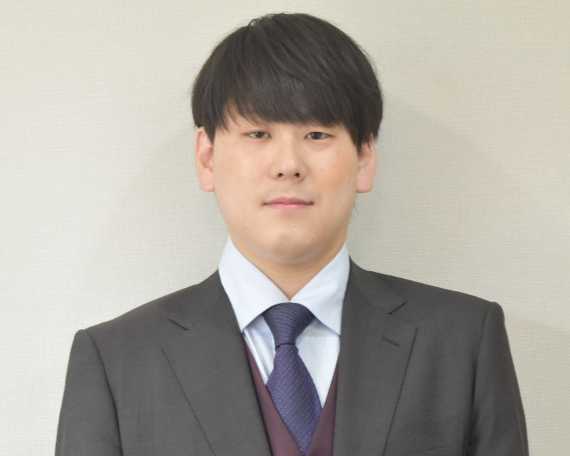
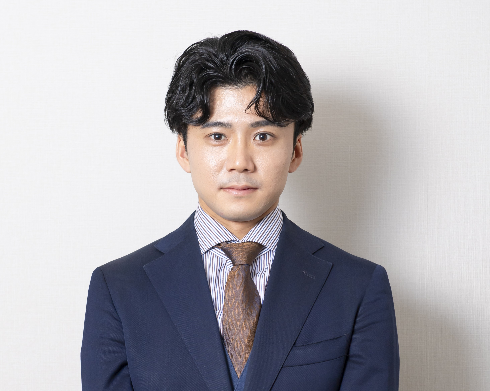
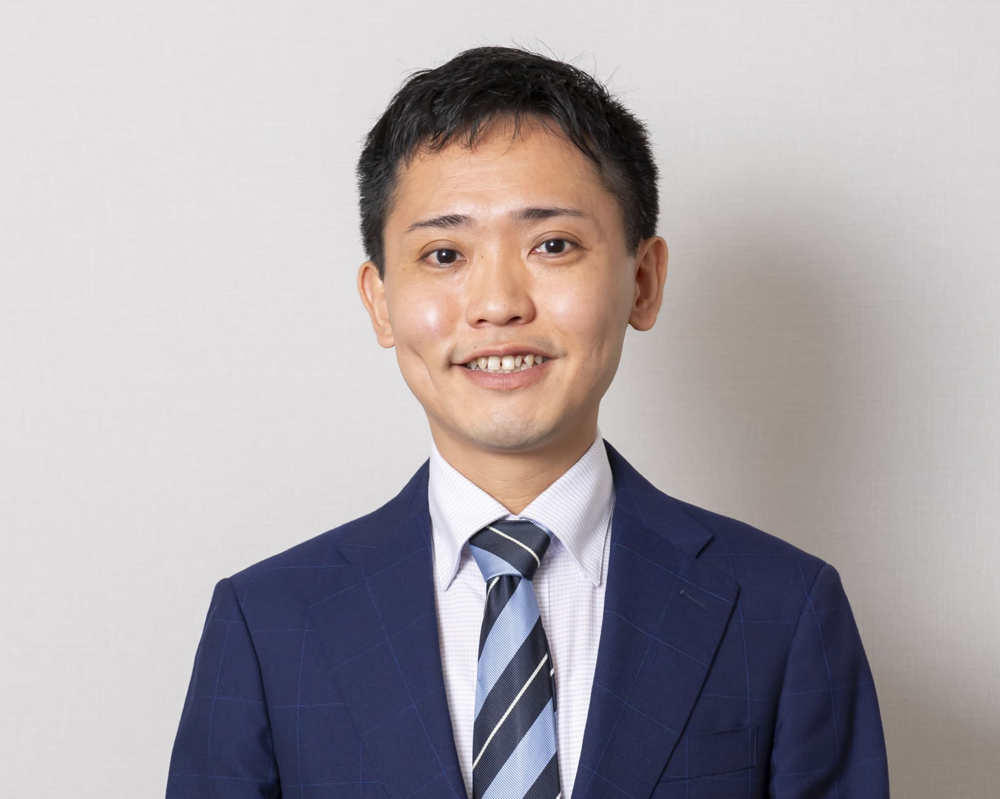

講師紹介
LECTURER
難関指導実績が豊富な
選抜された講師陣
elioの講師は、最難関合格実績をもつ選抜された講師です。難関合格は偏差値とにらめっこしていても生まれません。
生徒の可能性を引き出す力は合格指導の経験で培われます。お子さま一人ひとりの能力や性格を見極め、合格へ向かう力を最大限に引き出します。
-

エリオ代表／算数 Chief Executive Educator
竹山 隼矢
大手進学塾で都内西部をはじめ中学受験の地域責任者を務める他、複数の基幹校舎で教室責任者として活躍。得点だけではなく、問題ごとの正誤を数値分析する独自の手法で子ども達の学びの癖を把握する。直接指導をする受験生の第一志望校合格率は80％をこえる。
-

エリオ京都校 教室長／理科 Senior Executive Educator
吉本 格
大手塾で全国の教室を統括する高校入試数学科責任者、神奈川県内の高校入試部門統括、エリアマネージャーなどを歴任。算数・数学に関する本を6冊出版。授業時にはコーチとして、時にはカウンセラーとして、お子さまをしっかりと導きます。
-
算数 Executive Educator
遠藤 幸治
長年にわたり大手進学塾にて年長～小3を専門に指導してきた経験を活かし、子どもたちの可能性を最大限に引き出す指導を行う。日々触れ合う中で小さな変化に気付き、『良いところをたくさん見つけて伸ばす』ことを大切にした指導をします。
-
算数 Executive Educator
大同 翔音
難関中受験の指導歴は15年を超え、近年では大手模試の作問にも従事。正解だけを求めた知識の詰め込みではなく、理解に基づくインプットと、自ら考え説明できるアウトプットまでを重視した授業を展開。
-

国語 Educator
山口 雄大
受験国語の伝道者。子どもが生来保有する論理性を活かした「シンプルに考える」授業、精密で情理を備えた記述添削指導は比類がない。開成・桜蔭を筆頭に、薫陶を受けた塾生は幅広く、語り口のユーモアとエスプリ、またドラマの虜になった教え子たちは、官僚から詩人まで多士済々。
-

社会 Educator
山田 将生
大手進学塾で10年以上にわたり難関校受験指導に携わり、御三家・神奈川御三家中学をはじめ多くの合格実績を出した後、地方議員を経て現職。全47都道府県を訪れ各地の事情にも精通し、豊富な知識と経験に裏打ちされた授業を展開。
-

英語 Educator
山﨑 謙介
実践的な英語力を育む指導に加え、中学受験・高校受験を見据えた文法・読解指導においても高い実績を持つ。お子さまが英語を楽しみながら、かつ確実な得点力に繋がるような授業を展開します。